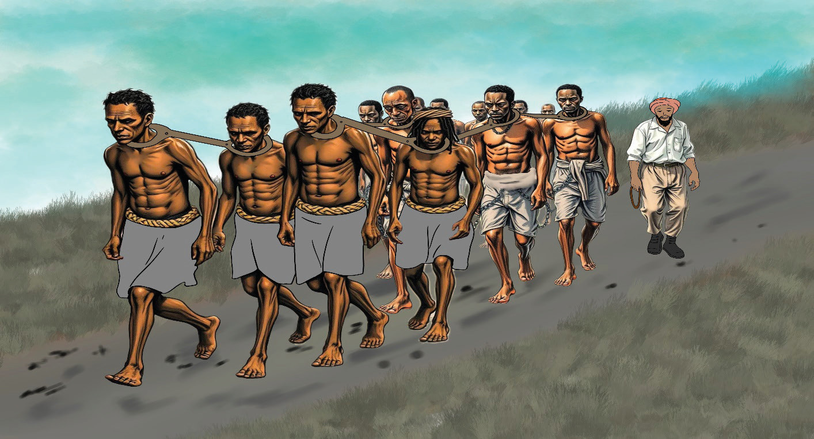

(b)
Read carefully the passage below and answer the questions that follow.
Slavery
Slavery is a system in which one person or group owns and controls others. They buy and sell them like commodities. In the slavery economic system, enslaved people are used to produce for their owners.
In pre-colonial Africa, slavery was quite common. People acquired enslaved people
by taking prisoners in war or kidnapping them from neighbouring communities.
Sometimes, such communities had to pay tribute or give enslaved people as
taxes to powerful rulers. Enslaved people were used as labourers on farms and in homes, and they were taken as porters in trade. Some trusted enslaved people became agents or managers for their masters, and sometimes they even became kings themselves, like Jaja of Opobo in West Africa.

Thus, in Africa, in general, enslaved people in many societies were accepted into
their owners’ families and treated less harshly. They were often given land and allowed to marry and have children. The situation changed with the coming of the Transatlantic Slave Trade to the Americas, where enslaved people could be beaten, killed and separated from their families with impunity.